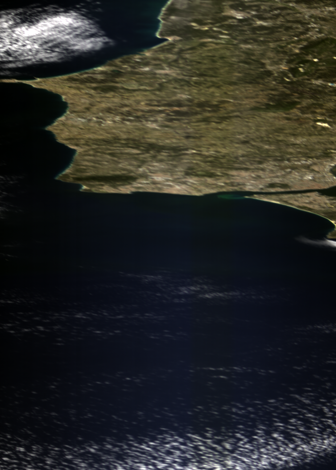
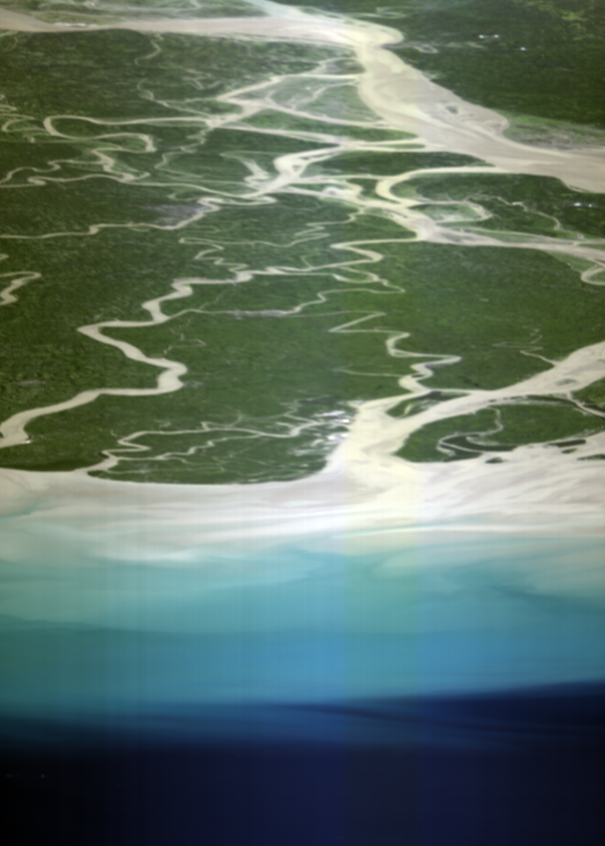
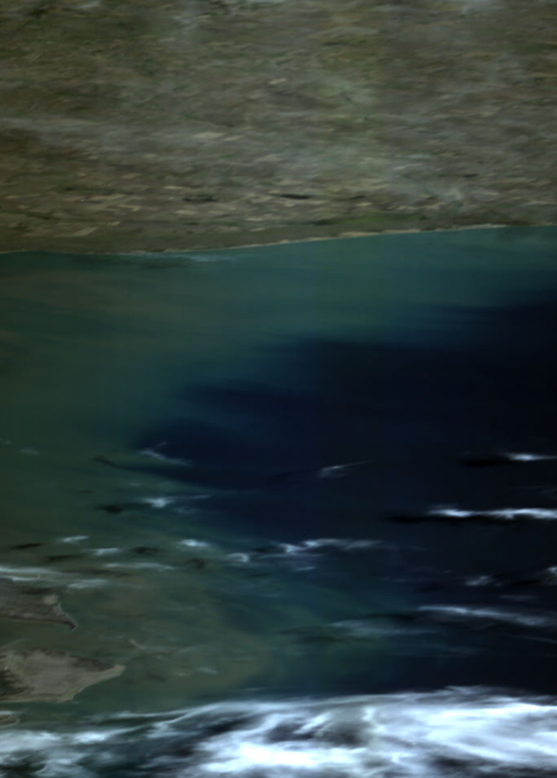
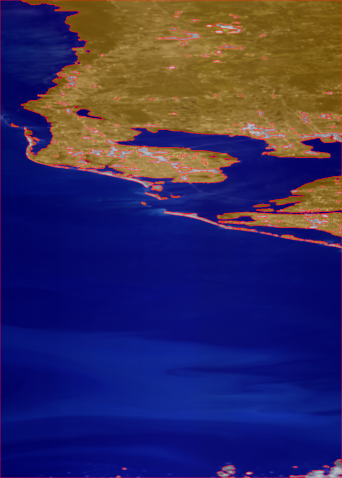
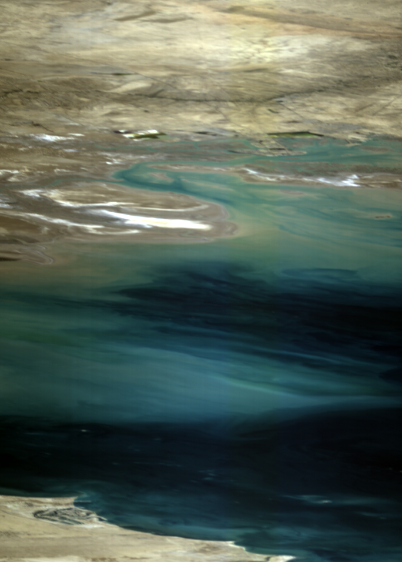
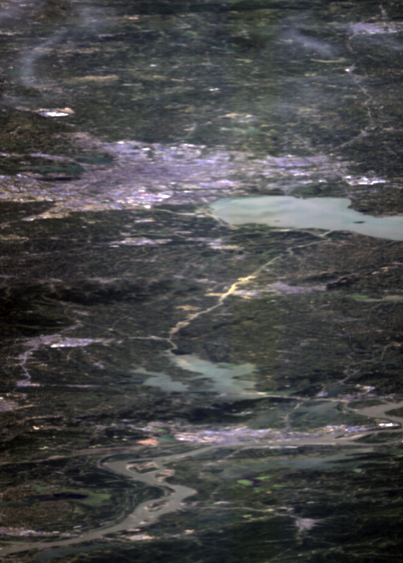
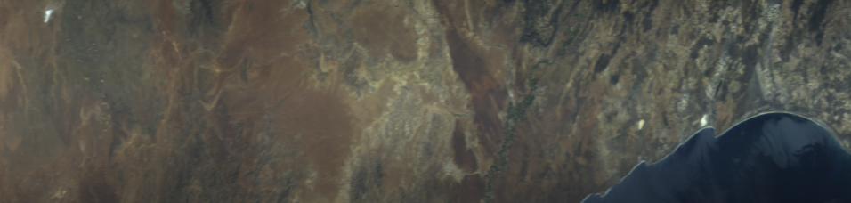
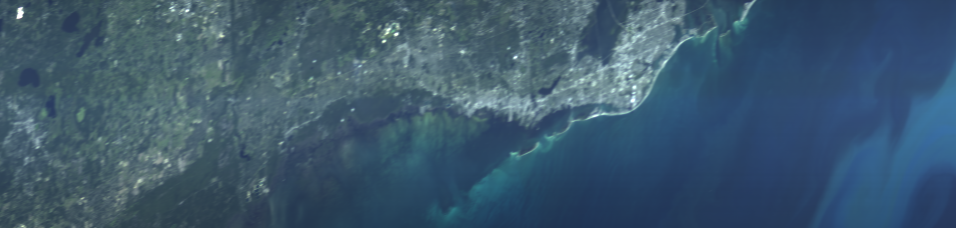
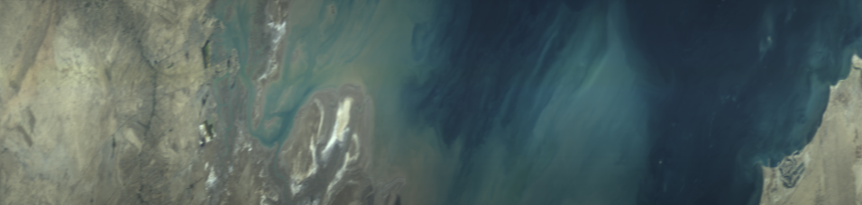

We introduce a diverse dataset of 200 calibrated Hyperspectral Images for Earth and ocean observation, including pixel-level labels for 38 images for sea/land/cloud categories. In the next table, we present the labeled data. The first column introduces the RGB composite of uncalibrated raw Hyperspectral Images, followed by the second column where we overlay the ground-truth labels onto the composite. We use blue for water systems (sea class), orange for land cover (land class), gray for cloudy/overexposed regions (clouds class), and red for the class boundaries. For every labeled scene, we offer additional metadata including continent, country, approximate geographical coordinates obtained from the on-board ADCS telemetry, scene type, date, solar zenith angle, exposure time, and the overexposed spectra ratio. Following the first table that shows the labeled subset for sea/land/clouds, we then present an overview of the rest of the dataset in the subsequent table. Every capture possesses an ID assigned for internal identification purposes, as well as for reference when addressing each specific capture. Click the blue buttons with a white arrow in the column header of the tables to sort the data at your convenience.
Although the raw, radiance and labels have been finalized and revised without any intended future changes, we continue to conduct additional verifications for the metadata associated with each capture. This includes ensuring, for instance, the precision of geographical location metadata for each capture. Please, note that the metadata is preliminary and hence susceptible to modifications throughout the months of September and October 2023. If you have any questions, feel free to contact us.
**: waiting to be filled.
__Current Status: we provide 180/200 images; 20 remaining scenes available in the next days.
| RGB (without binning) | GROUND-TRUTH LABELS | CONTINENT | COUNTRY | COORDINATES | SCENE TYPE | DATE | SOLAR ZENITH ANGLE | EXPOSURE TIME [ms] | OVEREXPOSED SPECTRA | ID |
|---|---|---|---|---|---|---|---|---|---|---|
| Asia | South Korea | 37°53'32.5"N 128°47'57.7"E | Forested | 27 August, 2022 | 35.15 | 19.99 | 0.01% | 4 | ||
| Europe | Iceland | 64°00'25.0"N 22°31'43.0"W | Arid | 05 September, 2022 | 58.05 | 35.00 | 0.00% | 5 | ||
| Africa | Namibia | 23°06'07.0"S 14°55'31.3"E | Arid | 02 September, 2022 | 44.17 | 10.00 | 0.00% | 6 | ||
| |
Europe | Iceland | 64°03'22.7"N 22°35'53.3"W | Arid | 06 September, 2002 | 58.82 | 30.01 | 8.19% | 7 | |
| North America | USA | 33°50'34.2"N 117°16'10.4"W | Arid | 11 September, 2022 | 39.11 | 19.99 | 3.90% | 9 | ||
| Asia | Qatar | 25°15'26.1"N 51°22'48.8"E | Arid | 12 September, 2022 | 34.16 | 15.00 | 0.04% | 10 | ||
| |
Europe | Italy | 45°13'46.2"N 12°06'54.1"E | Urban, coastal, and marine | 21 September, 2022 | 49.16 | 35.00 | 15.40% | 15 | |
|  | Europe | Portugal | 38°31'29.0"N 9°45'55.2"W | Coastal and marine | 22 September, 2022 | 44.19 | 19.99 | 0.00% | 16 | |
| North America | USA | 42°58'30.7"N 82°54'27.8"W | Urban, forested, coastal and marine | 27 August, 2022 | 38.14 | 30.00 | 0.02% | 17 | ||
|  | Asia | Bangladesh | 22°19'20.0"N 90°34'13.1"E | Coastal and marine | 26 October, 2022 | 42.29 | 30.01 | 0.00% | 25 | |
| |
Europe | Norway | 63°46'01.6"N 10°00'30.5"E | Forested | 23 August, 2022 | 53.31 | 30.01 | 0.28% | 26 | |
| |
Asia | Qatar | 25°53'00.5"N 51°20'50.0"E | Arid | 13 December, 2022 | 56.27 | 25.01 | 2.82% | 39 | |
| North America | USA | 25°10'22.9"N 81°43'17.3"W | Coastal and marine | 10 December, 2022 | 57.57 | 30.01 | 0.87% | 47 | ||
| South America | Chile | 40°22'28.1"S 72°58'44.0"W | Forested | 25 November, 2022 | 40.12 | 19.99 | 0.11% | 56 | ||
|  | South America | Argentina | 39°05'25.5"S 61°57'19.7"W | Coastal and marine | 04 December, 2022 | 35.09 | 19.99 | 1.72% | 58 | |
| |
Europe | Spain | 42°39'42.2"N 8°51'54.8"W | Cloudy | 04 December, 2022 | 65.95 | 30.01 | 38.62% | 59 | |
| Asia | India | 22°57'22.7"N 69°28'55.0"E | Arid, coastal, and marine | 20 November, 2022 | 51.48 | 25.01 | 1.59% | 89 | ||
| North America | USA | 37°54'03.1"N 122°23'16.2"W | Urban, coastal, and marine | 18 November, 2022 | 62.14 | 40.00 | 2.58% | 95 | ||
| North America | USA | 37°22'36.1"N 76°18'28.3"W | Forested, coastal, and marine | 18 November, 2022 | 62.19 | 30.01 | 0.04% | 96 | ||
| Asia | South Korea | 37°16'26.8"N 126°32'32.5"E | Urban, coastal, and marine | 06 November, 2022 | 57.76 | 35.00 | 2.26% | 107 | ||
| Asia | Bangladesh | 22°09'20.2"N 90°33'24.3"E | Coastal, and marine | 27 October, 2022 | 44.21 | 30.01 | 0.16% | 111 | ||
| Oceania | Palliser Islands (French Polynesia) | 15°16'40.0"S 146°19'28.3"W | Coastal, and marine | 22 October, 2022 | 31.88 | 25.01 | 4.63% | 120 | ||
| North America | USA | 33°09'21.5"N 115°43'23.0"W | Cloudy, Arid | 20 October, 2022 | 48.80 | 35.00 | 37.79% | 124 | ||
| Oceania | New Zealand | 43°37'43.1"S 172°17'26.7"E | Forested, coastal and marine | 17 October, 2022 | 44.55 | 30.01 | 15.53% | 127 | ||
|  | North America | USA | 27°35'40.1"N 82°53'14.1"W | Urban, coastal, and marine | 08 October, 2022 | 41.26 | 35.00 | 0.12% | 137 | |
| Europe | Brazil | 1°49'28.5"S 54°58'49.8"W | Forested | 24 September, 2022 | 24.89 | 19.99 | 0.00% | 148 | ||
|  | Asia | Iran | 30°04'35.5"N 48°52'28.3"E | Arid, coastal, and marine | 26 September, 2022 | 39.91 | 10.00 | 0.00% | 150 | |
| Europe | Norway | 71°23'03.9"N 25°23'06.4"E | Cloudy | 25 September, 2022 | 73.89 | 30.01 | 8.89% | 151 | ||
| |
North America | USA | 41°57'17.0"N 83°16'27.7"W | Cloudy | 21 September, 2022 | 46.48 | 30.01 | 90.06% | 158 | |
| Africa | Namibia | 23°26'13.4"S 14°47'44.8"E | Cloudy | 18 September, 2022 | 39.54 | 30.01 | 80.36% | 166 | ||
| Africa | Niger | 21°31'31.5"N 10°29'44.0"E | Overexposed | 29 September, 2022 | 30.50 | 40.00 | 99.97% | 178 | ||
| North America | Canada | 49°04'18.6"N 124°07'42.9"W | Forested, coastal and marine | 05 August, 2022 | 37.32 | 30.01 | 15.70% | 204 | ||
|  | Asia | China | 31°41'10.3"N 117°16'48.9"E | Urban, coastal and marine | 08 August, 2022 | 29.29 | 30.01 | 0.06% | 207 | |
| Europe | Norway | 70°43'04.4"N 22°53'38.5"E | Coastal and marine | 06 August, 2022 | 54.09 | 30.01 | 2.46% | 211 | ||
| North America | USA | 42°39'08.9"N 82°59'17.2"W | Urban, coastal and marine | 09 July, 2022 | 26.94 | 30.01 | 2.92% | 253 | ||
| Europe | Norway | 70°19'09.2"N 23°38'04.6"E | Cloudy | 06 July, 2022 | 82.36 | 30.01 | 0.01% | 255 | ||
| North America | USA (Midway Atoll) | 24°26'06.4"N 178°11'27.9"W | Coastal and marine | 25 June, 2022 | 23.98 | 35.00 | 15.26% | 266 | ||
| Africa | Ghana | 7°22'01.0"N 0°07'44.8"W | Coastal and marine | 15 February, 2023 | 40.33 | 15.00 | 0.00% | 273 |
There are approximately 25 million annotated spectral signatures present within the set of 38 labeled images. To be precise, the exact count of labeled spectral signatures is 24,848,352 and the class distribution is the following:
| RGB (binned x9) | CONTINENT | COUNTRY | COORDINATES | SCENE TYPE | DATE | SOLAR ZENITH ANGLE | EXPOSURE TIME | OVEREXPOSED SPECTRA | ID |
|---|---|---|---|---|---|---|---|---|---|
| Antarctica | N/A | 66°23'31.2"S 67°21'30.2"W | Polar and glacial | 27 August, 2022 | 83.51 | 19.99 | 0.00% | 1 | |
| South America | Chile | 41°27'03.2"S 73°15'39.4"W | Forested | 28 August, 2022 | 59.47 | 30.01 | 2.62% | 2 | |
| Europe | Norway (Arctic/Svalbard) | 78°55'55.2"N 13°26'17.6"E | Polar and glacial | 26 August, 2022 | 81.44 | 30.01 | 0.02% | 3 | |
| Asia | South Korea | 37°53'32.5"N 128°47'57.7"E | Forested | 27 August, 2022 | 35.15 | 19.99 | 0.01% | 4 | |
| Europe | Iceland | 64°00'25.0"N 22°31'43.0"W | Arid | 05 September, 2022 | 58.05 | 35.00 | 0.00% | 5 | |
| Africa | Namibia | 23°06'07.0"S 14°55'31.3"E | Arid | 02 September, 2022 | 44.17 | 10.00 | 0.00% | 6 | |
| Europe | Iceland | 64°03'22.7"N 22°35'53.3"W | Arid | 06 September, 2002 | 58.82 | 30.01 | 8.19% | 7 | |
| North America | USA | 54°42'06.6"N 131°46'24.1"W | Coastal and marine | September, 2022 | 52.85 | 30.01 | 0.00% | 8 | |
| North America | USA | 33°50'34.2"N 117°16'10.4"W | Arid | 11 September, 2022 | 39.11 | 19.99 | 3.90% | 9 | |
| Asia | Qatar | 25°15'26.1"N 51°22'48.8"E | Arid | 12 September, 2022 | 34.16 | 15.00 | 0.04% | 10 | |
| Europe | Italy | 42°03'20.9"N 12°10'06.8"E | Urban, coastal, and marine | 12 September, 2022 | 42.22 | 30.01 | 0.72% | 11 | |
| Africa | Namibia | 23°37'41.9"S 14°43'59.3"E | Arid | 19 September, 2022 | 41.64 | 30.01 | 25.38% | 12 | |
| Africa | Namibia | 23°07'05.0"S 14°43'22.2"E | Arid | 16 September, 2022 | 35.79 | 19.99 | 34.83% | 13 | |
| North America | USA | 38°33'03.5"N 116°00'29.7"W | Arid | 18 September, 2022 | 42.62 | 30.01 | 1.89% | 14 | |
| Europe | Italy | 45°13'46.2"N 12°06'54.1"E | Urban, coastal, and marine | 21 September, 2022 | 49.16 | 35.00 | 15.40% | 15 | |
| Europe | Portugal | 38°31'29.0"N 9°45'55.2"W | Coastal and marine | 22 September, 2022 | 44.19 | 19.99 | 0.00% | 16 | |
| North America | USA | 42°58'30.7"N 82°54'27.8"W | Urban, forested, coastal and marine | 27 August, 2022 | 38.14 | 30.00 | 0.02% | 17 | |
| Africa | Namibia | 23°16'49.6"S 14°55'46.5"E | Arid | 03 September, 2022 | 46.07 | 10.00 | 0.00% | 19 | |
| North America | USA | 59°51'39.5"N 139°37'25.5"W | Polar and glacial | 16 November, 2022 | 79.59 | 30.01 | 8.61% | 21 | |
| South America | Chile | 46°52'07.6"S 74°41'52.7"W | Cloudy, coasta, and marine | 16 November, 2022 | 41.39 | 19.99 | 16.04% | 22 | |
| North America | USA | 38°14'54.3"N 116°03'27.5"W | Arid | 10 October, 2022 | 47.80 | 19.99 | 3.48% | 23 | |
| Asia | China | 30°44'17.3"N 81°10'25.8"E | Arid, and forested | 06 November, 2022 | 50.99 | 19.99 | 17.46% | 24 | |
| Asia | Bangladesh | 22°19'20.0"N 90°34'13.1"E | Coastal and marine | 26 October, 2022 | 42.29 | 30.01 | 0.00% | 25 | |
| Europe | Norway | 63°46'01.6"N 10°00'30.5"E | Forested | 23 August, 2022 | 53.31 | 30.01 | 0.28% | 26 | |
| Oceania | Australia | 26°27'16.6"S 113°41'33.0"E | Coastal and marine | 16 ecember, 2022 | 39.84 | 25.01 | 0.87% | 28 | |
| Europe | Spain | 42°43'52.3"N 8°44'49.7"W | Cloudy | 03 December, 2022 | 65.41 | 30.01 | 31.89% | 29 | |
| South America | Chile | 33°17'41.8"S 71°56'43.3"W | Coastal and marine | 15 December, 2022 | 32.81 | 25.01 | 0.04% | 30 | |
 |
Africa | Chad | 13°20'08.2"N 14°21'27.0"E | Arid, coastal and marine | 09 December, 2022 | 45.13 | 25.01 | 13.83% | 31 |
| Oceania | Australia | 43°12'17.7"S 147°11'42.5"E | Cloudy, forested, coastal and marine | 02 December, 2022 | 37.55 | 30.01 | 7.93% | 32 | |
| North America | USA (Hawai) | 19°24'44.3"N 155°47'37.1"W | Cloudy, arid, coastal and marine | 02 December, 2022 | 52.05 | 30.01 | 38.50% | 33 | |
 |
Asia | Qatar | 25°43'15.3"N 51°21'08.4"E | Arid | 14 December, 2022 | 57.82 | 25.01 | 15.14% | 34 |
| Asia | Maldives Islands | 4°05'30.0"N 73°13'00.5"E | Coastal, and marine | 14 December, 2022 | 41.70 | 13.00 | 0.04% | 35 | |
| Antarctica | N/A | 76°06'49.1"S 26°13'28.8"W | Polar and glacial | 14 December, 2022 | 80.57 | 13.00 | 0.00% | 36 | |
 |
South America | Chile | 36°57'41.0"S 71°37'30.8"W | Forested | 13 December, 2022 | 28.09 | 19.99 | 0.17% | 37 |
| Asia | Qatar | 25°53'00.5"N 51°20'50.0"E | Arid | 13 December, 2022 | 56.27 | 25.01 | 2.82% | 39 | |
| Asia | Maldives Islands | 4°19'43.1"N 73°12'40.6"E | Coastal, and marine | 13 December, 2022 | 39.45 | 15.00 | 0.39% | 40 | |
| Asia | Kuwait | 29°50'53.7"N 48°13'05.3"E | Urban, coastal, and marine | 11 December, 2022 | 58.15 | 10.00 | 0.00% | 41 | |
| Asia | Myanmar | 19°59'04.7"N 92°32'51.6"E | Coastal, and marine | 11 December, 2022 | 50.82 | 19.99 | 0.10% | 42 | |
| Europe | Norway (Frohavet) | 63°49'16.9"N 9°04'46.7"E | Polar and glacial ** | 10 December, 2022 | 87.63 | 30.01 | 0.00% | 43 | |
| Asia | India | 22°50'21.1"N 68°58'03.6"E | Coastal and marine | 10 December, 2022 | 51.58 | 10.00 | 0.00% | 44 | |
| South America | Argentina | 38°54'17.0"S 62°14'23.6"W | Arid, coastal, and marine | 20 December, 2022 | 32.03 | 19.99 | 0.00% | 45 | |
| North America | USA | 60°36'54.2"N 147°29'37.1"W | Polar and glacial | 09 December, 2022 | 86.14 | 30.01 | 0.00% | 46 | |
 |
North America | USA | 25°10'22.9"N 81°43'17.3"W | Coastal and marine | 10 December, 2022 | 57.57 | 30.01 | 0.87% | 47 |
| South America | Argentina | 30°14'53.4"S 62°36'04.7"W | Cloudy, coastal, and marine | 09 December, 2022 | 28.03 | 19.99 | 5.71% | 48 | |
| North America | USA | 25°10'22.9"N 81°43'17.3"W | Coastal, and marine - Repeated | 10 December, 2022 | 57.57 | 30.01 | 0.87% | 50 | |
| Antarctica | N/A | 74°54'03.6"S 26°55'17.2"W | Polar and glacial | 06 December, 2022 | 59.03 | 10.00 | 4.26% | 53 | |
| Asia | China | 39°17'59.7"N 117°54'35.0"E | Cloudy | 07 December, 2022 | 63.32 | 25.01 | 4.85% | 55 | |
 |
South America | Chile | 40°22'28.1"S 72°58'44.0"W | Forested | 25 November, 2022 | 40.12 | 19.99 | 0.11% | 56 |
| North America | USA | 42°32'15.9"N 87°38'34.2"W | Coastal and marine | 04 December, 2022 | 67.37 | 30.01 | 0.00% | 57 | |
| South America | Argentina | 39°05'25.5"S 61°57'19.7"W | Coastal and marine | 04 December, 2022 | 35.09 | 19.99 | 1.72% | 58 | |
| Europe | Spain | 42°39'42.2"N 8°51'54.8"W | Cloudy | 04 December, 2022 | 65.95 | 30.01 | 38.62% | 59 | |
| North America | USA | 26°04'38.2"N 82°13'37.1"W | Coastal and marine | 02 December, 2022 | 56.41 | 30.01 | 0.01% | 60 | |
| Europe | Norway | 59°13'30.6"N 5°14'42.4"E | Forested | 04 December, 2022 | 83.68 | 30.01 | 0.00% | 61 | |
| Asia | India | 22°36'21.0"N 69°03'27.3"E | Coastal, and marine | 04 December, 2022 | 52.59 | 15.00 | 0.00% | 62 | |
| Europe | Norway | 59°21'00.6"N 5°22'43.9"E | Polar and glacial | 03 December, 2022 | 83.08 | 30.01 | 0.00% | 63 | |
| Asia | Bangladesh | 25°23'40.0"N 89°28'50.8"E | Forested | 03 December, 2022 | 54.92 | 19.99 | 0.00% | 64 | |
| South America | Argentina | 38°48'15.0"S 61°53'42.5"W | Coastal and marine | 02 December, 2022 | 30.39 | 19.99 | 0.00% | 65 | |
| South America | Falkland Islands (Islas Malvinas) | 52°03'57.4"S 59°43'40.5"W | Cloudy | 02 December, 2022 | 48.68 | 30.01 | 55.96% | 66 | |
| Asia | Qatar | 26°23'44.5"N 51°23'57.2"E | Arid | 02 December, 2022 | 50.74 | 15.00 | 0.00% | 67 | |
 |
Asia | Bangladesh | 25°45'51.9"N 89°30'27.9"E | Forested | 01 December, 2022 | 52.09 | 19.99 | 0.00% | 68 |
| North America | USA | 58°26'30.5"N 136°09'21.8"W | Polar and glacial | 30 December, 2022 | 80.51 | 19.99 | 0.00% | 69 | |
| Asia | Pakistan | 25°05'58.3"N 69°17'22.1"E | Arid | 29 November, 2022 | 57.90 | 19.99 | 1.26% | 70 | |
|  | Africa | South Africa | 31°17'17.2"S 18°43'38.7"E | Arid | 28 November, 2022 | 29.81 | 15.00 | 0.00% | 71 |
| Asia | Pakistan | 24°57'50.7"N 69°18'00.3"E | Arid | 28 November, 2022 | 55.81 | 15.00 | 0.02% | 72 | |
| North America | USA | 63°06'57.8"N 145°29'18.3"W | Polar and glacial | 27 November, 2022 | 84.62 | 40.00 | 0.31% | 73 | |
| South America | Falkland Islands (Islas Malvinas) | 49°20'01.8"S 60°36'32.2"W | Coastal and marine | 27 November, 2022 | 39.48 | 19.99 | 2.99% | 74 | |
| North America | Canada | 51°38'43.9"N 121°32'52.7"W | Cloudy | 27 November, 2022 | 73.18 | 30.01 | 50.46% | 75 | |
| North America | USA | 31°20'15.6"N 91°43'46.8"W | Forested | 27 November, 2022 | 57.32 | 30.01 | 0.00% | 76 | |
| Europe | Norway | 65°27'58.3"N 11°26'17.9"E | Cloudy, coastal and marine | 26 November, 2022 | 87.18 | 40.00 | 0.00% | 77 | |
| North America | USA | 27°51'23.2"N 81°58'59.1"W | Cloudy | 25 November, 2022 | 57.22 | 19.99 | 15.27% | 78 | |
| Europe | Norway | 64°37'36.6"N 9°12'54.4"E | Cloudy, coastal, and marine | 24 November, 2022 | 85.60 | 35.00 | 0.00% | 79 | |
| Asia | China | 42°07'14.3"N 109°29'21.7"E | Arid | 24 November, 2022 | 67.64 | 19.99 | 0.00% | 80 | |
| Antarctica | N/A | 73°32'10.0"S 18°36'31.3"W | Cloudy | 24 November, 2022 | 85.55 | 35.00 | 0.00% | 81 | |
| Asia | Bangladesh | 23°46'48.3"N 90°51'13.8"E | Cloudy, coastal, and marine | 23 November, 2022 | 47.50 | 19.99 | 0.00% | 84 | |
| Africa | Namibia | 23°00'22.7"S 14°51'32.2"E | Arid | 22 November, 2022 | 37.20 | 19.99 | 21.19% | 85 | |
| North America | USA | 37°44'02.5"N 88°04'39.4"W | Arid, coastal, and marine | 21 November, 2022 | 62.30 | 49.73 | 0.01% | 86 | |
| Europe | Spain | 29°10'11.8"N 16°50'10.4"W | Cloudy, coastal, and marine | 21 November, 2022 | 54.49 | 30.01 | 17.90% | 87 | |
| Asia | Qatar | 26°28'43.7"N 51°56'11.3"E | Coastal, and marine | 20 November, 2022 | 51.54 | 19.99 | 0.00% | 88 | |
| Asia | India | 22°57'22.7"N 69°28'55.0"E | Arid, coastal, and marine | 20 November, 2022 | 51.48 | 25.01 | 1.59% | 89 | |
| Asia | Bangladesh | 25°47'32.7"N 89°33'00.9"E | Arid | 20 November, 2022 | 55.88 | 40.00 | 28.63% | 90 | |
| Asia | China | 36°38'40.4"N 120°00'49.2"E | Cloudy | 20 November, 2022 | 62.00 | 30.01 | 94.21% | 91 | |
| Europe | Norway | 63°56'31.0"N 10°24'16.1"E | Forested | 19 November, 2022 | 84.46 | 49.73 | 0.00% | 92 | |
| Asia | Bangladesh | 25°41'53.5"N 89°30'59.0"E | Forested | 19 November, 2022 | 53.87 | 40.00 | 13.98% | 94 | |
| North America | USA | 37°54'03.1"N 122°23'16.2"W | Urban, coastal, and marine | 18 November, 2022 | 62.14 | 40.00 | 2.58% | 95 | |
| North America | USA | 37°22'36.1"N 76°18'28.3"W | Forested, coastal, and marine | 18 November, 2022 | 62.19 | 30.01 | 0.04% | 96 | |
| Africa | Chad | 13°31'20.7"N 14°24'20.2"E | Arid | 18 November, 2022 | 44.12 | 10.00 | 0.00% | 97 | |
| North America | USA | 58°36'58.6"N 136°16'20.5"W | Polar and glacial | 17 November, 2022 | 78.60 | 30.01 | 5.68% | 98 | |
| North America | USA | 67°07'37.3"N 162°39'44.6"W | Cloudy, polar and glacial | 16 November, 2022 | 86.65 | 30.01 | 0.00% | 99 | |
| Asia | China | 40°59'03.7"N 109°21'09.1"E | Arid | 16 November, 2022 | 64.24 | 19.99 | 0.30% | 101 | |
| Europe | Spain | 42°26'32.2"N 9°03'03.1"W | Cloudy | 15 November, 2022 | 64.25 | 35.00 | 46.37% | 102 | |
| North America | USA | 26°27'10.6"N 82°21'46.8"W | Cloudy, coastal, and marine | 06 November, 2022 | 46.03 | 35.00 | 10.37% | 103 | |
| South America | Brazil | 22°50'28.8"S 53°16'31.0"W | Forested | 05 November, 2022 | 29.16 | 40.00 | 0.11% | 106 | |
| Asia | South Korea | 37°16'26.8"N 126°32'32.5"E | Urban, coastal, and marine | 06 November, 2022 | 57.76 | 35.00 | 2.26% | 107 | |
| Africa | Sudan | 21°55'53.5"N 27°55'44.4"E | Arid | 04 November, 2022 | 42.21 | 18.99 | 0.47% | 108 | |
| Africa | Algeria | 30°43'39.4"N 7°07'57.0"E | Arid | 29 October, 2022 | 49.32 | 30.01 | 70.75% | 109 | |
| Asia | Saudi Arabia | 19°05'44.2"N 45°57'53.2"E | Arid | 27 October, 2022 | 40.00 | 30.01 | 92.18% | 110 | |
| Asia | Bangladesh | 22°09'20.2"N 90°33'24.3"E | Coastal, and marine | 27 October, 2022 | 44.21 | 30.01 | 0.16% | 111 | |
| North America | USA | 37°51'16.9"N 122°44'59.5"W | Urban, coasta, and marine | 26 October, 2022 | 55.57 | 30.01 | 0.00% | 112 | |
| Africa | Algeria | 32°05'38.0"N 1°51'28.7"W | Arid | 26 October, 2022 | 49.53 | 30.01 | 3.91% | 113 | |
| Oceania | New Zealand | 43°37'39.5"S 172°16'57.8"E | Cloudy, and forested | 25 October, 2022 | 42.63 | 30.01 | 49.39% | 114 | |
| Atlanctica | N/A | 78°34'49.7"S 165°26'20.2"W | Polar and glacial | 25 October, 2022 | 71.64 | 25.01 | 56.96% | 115 | |
| North America | USA | 28°27'16.7"N 82°53'05.6"W | Urban, coasta, and marine | 23 October, 2022 | 45.62 | 30.01 | 0.00% | 116 | |
| Asia | Egypt | 29°13'51.7"N 34°30'26.9"E | Arid, coastal, and marine | 23 October, 2022 | 46.94 | 25.01 | 1.67% | 117 | |
| Oceania | New Zealand | 43°02'38.0"S 172°22'03.5"E | Forested, coastal, and marine | 22 October, 2022 | 38.19 | 30.01 | 5.02% | 118 | |
| Oceania | Palliser Islands (French Polynesia) | 15°16'40.0"S 146°19'28.3"W | Coastal, and marine | 22 October, 2022 | 31.88 | 25.01 | 4.63% | 120 | |
| Oceania | New Zealand | 43°43'49.7"S 172°10'41.6"E | Forested, coastal, and marine | 21 October, 2022 | 50.86 | 35.00 | 16.82% | 121 | |
| Africa | Namibia | 23°19'06.0"S 14°44'21.8"E | Arid | 20 October, 2022 | 32.61 | 19.99 | 27.25% | 122 | |
 |
Africa | Algeria | 31°15'39.9"N 1°57'42.5"E | Arid | 20 October, 2022 | 47.60 | 30.01 | 79.66% | 123 |
| North America | USA | 33°09'21.5"N 115°43'23.0"W | Cloudy, Arid | 20 October, 2022 | 48.80 | 35.00 | 37.79% | 124 | |
| North America | Canada | 49°02'52.3"N 116°23'06.3"W | Forested | 18 October, 2022 | 61.06 | 49.73 | 0.81% | 125 | |
| North America | USA | 26°16'31.1"N 82°15'08.0"W | Cloudy | 18 October, 2022 | 46.57 | 30.01 | 97.57% | 126 | |
 |
Oceania | New Zealand | 43°37'43.1"S 172°17'26.7"E | Forested, coastal, and marine | 17 October, 2022 | 44.55 | 30.01 | 15.53% | 127 |
| Europe, Asia | Ukraine | 46°29'01.2"N 36°00'00.2"E | Coastal, and marine | 15 October, 2022 | 58.85 | 35.00 | 0.70% | 129 | |
| North America | USA | 38°24'18.7"N 116°02'39.9"W | Cloudy | 14 October, 2022 | 53.98 | 49.73 | 75.40% | 130 | |
 |
North America | USA | 38°31'42.9"N 116°00'25.6"W | Arid | 12 October, 2022 | 50.83 | 40.00 | 15.95% | 131 |
| North America | USA | 38°01'03.1"N 116°12'41.5"W | Arid | 11 October, 2022 | 48.98 | 19.99 | 0.02% | 133 | |
| South America | Argentina | 39°21'17.6"S 62°20'38.2"W | Urban, forested, coastal, and marine | 10 October, 2022 | 42.04 | 30.01 | 0.00% | 134 | |
| Europe | Greece | 37°54'23.6"N 21°47'35.3"E | Arid, coastal, and marine | 10 October, 2022 | 49.06 | 35.00 | 0.00% | 135 | |
| Europe | UK | 51°17'35.7"N 0°05'03.2"E | Coastal and marine | 09 October, 2022 | 59.62 | 30.01 | 0.21% | 136 | |
 |
North America | USA | 27°35'40.1"N 82°53'14.1"W | Urban, coastal, and marine | 08 October, 2022 | 41.26 | 35.00 | 0.12% | 137 |
|  | North America | USA | 27°53'15.7"N 82°49'38.9"W | Urban, coastal, and marine | 07 October, 2022 | 39.56 | 35.00 | 0.06% | 138 |
| North America | Mexico | 28°44'18.2"N 111°47'25.2"W | Arid, coastal, and marine | 06 October, 2022 | 41.11 | 19.99 | 0.00% | 139 | |
| North America | USA | 28°48'58.9"N 80°50'39.3"W | Cloudy | 29 September, 2022 | 36.74 | 10.00 | 89.76% | 142 | |
 |
Asia | China | 31°45'46.9"N 82°44'43.5"E | Arid | 29 September, 2022 | 40.58 | 10.00 | 0.38% | 143 |
| South America | Brazil | 0°48'27.1"S 48°40'55.0"W | Cloudy, forested | 28 September, 2022 | 30.37 | 19.99 | 8.30% | 144 | |
| Europe | Norway | 71°30'24.2"N 26°12'33.8"E | Cloudy, coastal, marine | 27 September, 2022 | 73.28 | 35.00 | 0.15% | 145 | |
| North America | Canada | 50°05'27.1"N 124°10'24.5"W | Forested, coastal, and marine | 27 September, 2022 | 52.83 | 35.00 | 5.45% | 146 | |
| Europe | Brazil | 1°55'10.5"S 54°56'27.7"W | Coastal, and marine | 25 September, 2022 | 27.74 | 19.99 | 3.27% | 147 | |
| Europe | Brazil | 1°49'28.5"S 54°58'49.8"W | Forested | 24 September, 2022 | 24.89 | 19.99 | 0.00% | 148 | |
| Europe | Portugal | 38°28'01.7"N 9°47'01.4"W | Cloudy | 23 September, 2022 | 45.88 | 19.99 | 8.73% | 149 | |
|  | Asia | Iran | 30°04'35.5"N 48°52'28.3"E | Arid, coastal, and marine | 26 September, 2022 | 39.91 | 10.00 | 0.00% | 150 |
| Europe | Norway | 71°23'03.9"N 25°23'06.4"E | Cloudy | 25 September, 2022 | 73.89 | 30.01 | 8.89% | 151 | |
| North America | USA | 41°41'25.0"N 83°20'54.7"W | Cloudy, forested | 23 September, 2022 | 49.58 | 30.01 | 8.95% | 152 | |
| Asia | China | 40°40'03.7"N 109°15'43.3"E | Arid | 25 September, 2022 | 51.13 | 10.00 | 0.00% | 153 | |
| North America | USA | 48°39'32.7"N 116°39'46.4"W | Forested | 21 September, 2022 | 56.08 | 19.99 | 0.03% | 157 | |
| North America | USA | 41°57'17.0"N 83°16'27.7"W | Cloudy | 21 September, 2022 | 46.48 | 30.01 | 90.06% | 158 | |
| Europe | Hungary | 47°00'38.4"N 17°48'15.1"E | Forested | 22 September, 2022 | 50.17 | 30.01 | 4.30% | 160 | |
| North America | USA | 48°50'57.8"N 116°40'39.1"W | Cloudy | 16 September, 2022 | 49.16 | 35.00 | 63.57% | 162 | |
| Africa | Namibia | 23°26'13.4"S 14°47'44.8"E | Cloudy | 18 September, 2022 | 39.54 | 30.01 | 80.36% | 166 | |
| Europe | Norway | 59°36'21.1"N 5°52'10.1"E | Forested | 27 August, 2022 | 49.82 | 30.01 | 15.83% | 168 | |
| North America | Canada | 50°15'20.6"N 125°22'40.7"W | Cloudy, coastal, marine | 05 September, 2022 | 46.59 | 35.00 | 33.09% | 170 | |
| North America | Canada | 49°54'46.6"N 124°32'53.4"W | Forested, coastal, marine | 10 September, 2022 | 45.90 | 30.01 | 5.60% | 172 | |
| Europe | Faroe Islands | 62°15'30.9"N 10°20'44.8"W | Overexposed | 08 September, 2022 | 57.08 | 35.00 | 99.74% | 176 | |
| North America | USA | 48°19'33.5"N 119°36'32.4"W | Cloudy | 07 September, 2022 | 45.56 | 35.00 | 56.63% | 177 | |
| Africa | Niger | 21°31'31.5"N 10°29'44.0"E | Overexposed | 29 September, 2022 | 30.50 | 40.00 | 99.97% | 178 | |
| North America | USA | 42°06'28.7"N 83°29'14.8"W | Overexposed | 04 September, 2022 | 40.01 | 35.00 | 100%** | 179 | |
| North America | USA | 41°55'51.5"N 83°32'45.6"W | Overexposed | 05 September, 2022 | 41.50 | 35.00 | 99.99% | 181 | |
| Europe | Norway | 60°38'38.8"N 10°08'10.3"E | Forested, coastal andmarine | 31 August, 2022 | 58.74 | 49.73 | 79.41% | 185 | |
 |
Europe | Norway | 62°58'01.2"N 5°38'07.8"E | Cloudy, coastal, marine | 29 August, 2022 | 54.37 | 30.01 | 20.84% | 186 |
| Asia | Russia | 43°22'36.8"N 131°30'24.7"E | Forested | 28 August, 2022 | 39.82 | 19.99 | 0.39% | 188 | |
 |
Europe | Norway (Arctic) | 78°53'39.7"N 13°20'42.3"E | Polar and glacial | 26 August, 2022 | 85.67 | 30.01 | 0.00% | 189 |
| Asia | Saudi Arabia | 18°46'04.4"N 46°25'01.5"E | Overexposed | 26 August, 2022 | 30.86 | 30.01 | 92.95% | 194 | |
| North America | USA | 45°37'37.7"N 113°53'18.1"W | Forested | 25 August, 2022 | 40.32 | 30.01 | 1.22% | 195 | |
| North America | Canada | 49°04'18.6"N 124°07'42.9"W | Forested, coastal and marine | 05 August, 2022 | 37.32 | 30.01 | 15.70% | 204 | |
| Asia | China | 31°41'10.3"N 117°16'48.9"E | Urban, coastal and marine | 08 August, 2022 | 29.29 | 30.01 | 0.06% | 207 | |
 |
North America | USA | 48°14'09.5"N 118°33'02.3"W | Forested, coastal and marine | 06 August, 2022 | 35.84 | 30.01 | 0.59% | 208 |
| North America | USA | 46°38'21.6"N 107°25'47.7"W | Forested, coastal and marine | 08 August, 2022 | 33.14 | 35.00 | 0.01% | 209 | |
| South America | Chile | 52°15'02.3"S 70°22'16.8"W | Cloudy, polar and glacial ** | 07 August, 2022 | 76.78 | 40.00 | 2.36% | 210 | |
| Europe | Norway | 70°43'04.4"N 22°53'38.5"E | Coastal and marine | 06 August, 2022 | 54.09 | 30.01 | 2.46% | 211 | |
| Europe | Hungary | 47°01'17.2"N 17°45'00.1"E | Coastal and marine | 05 August, 2022 | 36.00 | 30.01 | 0.00% | 212 | |
| North America | USA | 42°39'08.9"N 82°59'17.2"W | Urban, coastal and marine | 09 July, 2022 | 26.94 | 30.01 | 2.92% | 253 | |
| Europe | Norway | 70°26'49.7"N 23°31'15.9"E | Cloudy | 07 July, 2022 | 81.71 | 30.01 | 0.02% | 254 | |
| Europe | Norway | 70°19'09.2"N 23°38'04.6"E | Cloudy | 06 July, 2022 | 82.36 | 30.01 | 0.01% | 255 | |
| North America | Canada | 49°49'03.8"N 124°10'48.1"W | Cloudy | 05 July, 2022 | 34.47 | 30.01 | 67.94% | 258 | |
| Europe | Norway | 70°46'33.7"N 23°18'36.1"E | Cloudy | 05 July, 2022 | 48.02 | 30.01 | 58.09% | 259 | |
| North America | USA (Hawai) | 21°00'17.4"N 157°23'52.4"W | Coastal and marine | ** July, 2022 | 24.08 | 30.01 | 12.04% | 260 | |
| North America | Canada | 52°17'15.8"N 127°18'02.2"W | Cloudy | 30 June, 2022 | 31.53 | 30.01 | 61.59% | 262 | |
| North America | USA | 40°33'49.6"N 83°57'54.1"W | Forested, coastal and marine | 30 June, 2022 | 23.83 | 30.01 | 0.05% | 263 | |
 |
Africa | Namibia | 23°25'32.6"S 14°54'57.6"E | Arid | 30 June, 2022 | 57.75 | 10.00 | 0.00% | 264 |
| Antarctica | N/A | 61°54'17.4"S 166°55'32.9"E | Coastal and marine | 26 June, 2022 | 90.58 | 35.00 | 0.00% | 265 | |
| North America | USA (Midway Atoll) | 24°26'06.4"N 178°11'27.9"W | Coastal and marine | 25 June, 2022 | 23.98 | 35.00 | 15.26% | 266 | |
| North America | USA | 64°14'29.7"N 146°51'54.0"W | Forested | 24 June, 2022 | 42.61 | 35.00 | 28.82% | 267 | |
| Europe | Norway | 60°48'04.0"N 11°04'01.4"E | Overexposed | ** June, 2022 | 39.40 | 35.00 | 97.62% | 268 | |
| Europe | Norway (Arctic) | 81°58'12.0"N 27°08'06.1"E | Overexposed | 14 June, 2022 | 59.09 | 40.00 | 87.93% | 269 | |
| Europe | Norway (Arctic) | 76°17'01.0"N 24°35'37.3"E | Cloudy | 13 June, 2022 | 72.42 | 40.00 | 48.59% | 270 | |
| Eruope | Sweden** | 65°35'44.3"N 16°31'45.2"E | Coastal and marine | ** June, 2022 | 85.11 | 40.00 | 0.00% | 271 | |
| Europe | Norway | 72°26'39.0"N 18°33'08.2"E | Cloudy, forested | ** June, 2022 | 49.45 | 40.00 | 46.86% | 272 | |
| Africa | Ghana | 7°22'01.0"N 0°07'44.8"W | Coastal and marine | 15 February, 2023 | 40.33 | 15.00 | 0.00% | 273 | |
| Asia | Myanmar | 16°31'32.2"N 96°08'18.1"E | Coastal and marine | 15 February, 2023 | 45.06 | 15.00 | 0.00% | 274 | |
| North America | Mexico | 20°18'16.4"N 103°16'33.2"W | Forested | 19 March, 2023 | 46.06 | 10.00 | 0.04% | 275 |